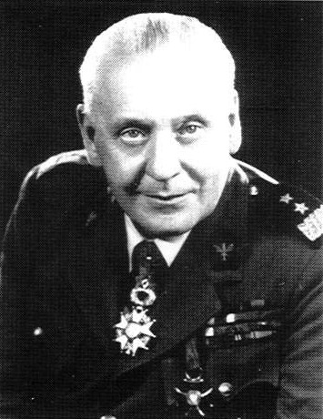
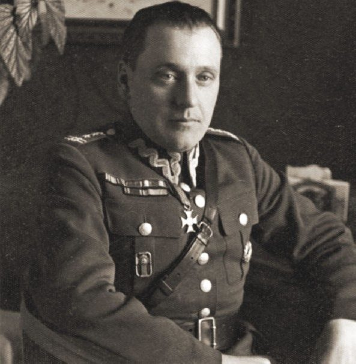
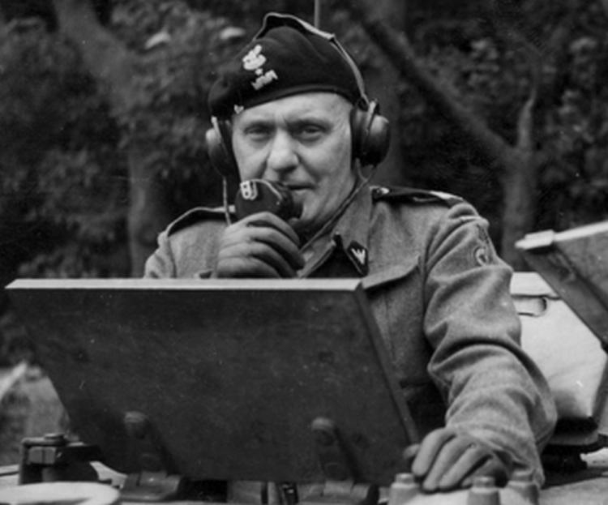

Urodził się w miejscowości Szczerzec pod Lwowem. Jego rodzina była pochodzenia chorwackiego. Po ukończeniu gimnazjum przeniósł się z rodziną do Lwowa. W latach 1910–1914 studiował na Wydziale Humanistycznym. W tym czasie odbył przeszkolenie wojskowe i w 1912 dołączył do Związku Strzeleckiego.
Podczas I wojny światowej został wcielony do armii austro-węgierskiej. Prawdopodobnie próbował zaciągnąć się do Legionów organizowanych przez Józefa Piłsudskiego, jednak nie udało mu się.
Walczył także w wojnie polsko-ukraińskiej, gdzie bardzo się zasłużył w boju i zyskał tytuł kapitana.
Podczas wojny polsko-bolszewickiej bronił Lwowa.
We wrześniu walczył na południu Polski. Walczył między innymi pod Rzeszowem. Potem przesunął się pod Lwów. Po ataku Związku Radzieckiego Maczek zdecydował się na opuszczenie kraju. Wraz z żołnierzami przekroczył granicę i przedostał się do Węgier. 21 października był już we Francji.
Tam został dowódcą lekkiej brygady. W czerwcu 1940r. walczył w obronie Francji.
Następnie po długiej podróży trafił do Wielkiej Brytanii. Tam powierzono mu dowództwo nad 2 brygadą strzelców, w lutym 1942 przemianowaną na 1 brygadę pancerną.
Po alianckiej inwazji na Normandię w czerwcu 1944 roku przyszedł również czas na działania 1. Dywizji Pancernej. 1 sierpnia 1944 dywizja wylądowała w Normandii, w pobliżu Caen.
W ciągłych walkach z Wehrmachtem gen. Maczek prowadził dywizję w kierunku Belgii i Holandii. Wyzwolił m.in. Ypres, Gandawę i Passchendale.
Dzięki znakomitemu manewrowi oskrzydlającemu, po ciężkich walkach Maczkowi udało się wyzwolić Bredę bez strat wśród ludności cywilnej.
4 maja 1945 dywizja dotarła do bazy Kriegsmarine w Wilhelmshaven, gdzie generał przyjął kapitulację dowództwa twierdzy. 1 czerwca 1945 został awansowany do stopnia generała dywizji.
W dniu 19 maja 1945 roku w miasteczku niemieckim Haren, wcześniej zdobytym przez 1 Dywizję Pancerną, położonym w Dolnej Saksonii, gen. Stanisław Maczek i jego żołnierze stworzyli tymczasowe lokum dla Polaków, jeńców byłych niemieckich obozów, żołnierzy, którzy nie mieli dachu nad głową. W miasteczku mieszkało ok. 5000 Polaków.
Stanisław Maczek pozostał na emigracji w Edynburgu w Wielkiej Brytanii. Od września 1945 dowodził jednostkami polskimi, które pozostały w Wielkiej Brytanii aż do ich demobilizacji. Od 1945 roku pozbawiony świadczeń przysługujących żołnierzom alianckim, rozpoczął pracę jako sprzedawca, a następnie barman w restauracji hoteli prowadzonych wówczas przez polskich emigrantów: „Dorchester” i „Learmonth” w Edynburgu.
26 września 1946 r. Rząd Polski pozbawił Maczka obywatelstwa polskiego. W dniu 15 marca 1989 r. uchylono uchwałę pozbawiającą Maczka obywatelstwa. 26 lutego 1989 r. dostarczono generałowi prywatny list od premiera Rakowskiego z przeprosinami za odebranie obywatelstwa
Na wniosek ponad 40 000 mieszkańców Bredy generałowi przyznano honorowe obywatelstwo Holandii. 11 listopada 1990 r. został awansowany przez prezydenta RP na uchodźstwie do stopnia generała broni.
Zmarł w wieku 102 lat w Edynburgu. Został pochowany na cmentarzu żołnierzy polskich w Bredzie.